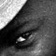
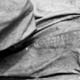

| BANJUL, GAMBIA Il capitano ed il suo secondo entrambi nel più assoluto silenzio sembrano godersi il gentile sospiro del vento che ci accompagna dalla partenza. Come un vecchio pirata, il mozzo più anziano scruta attentamente l'orizzonte in cerca dei delfini, che mi verrà detto solo più tardi, sono soliti accompagnarli in questa traversata. |
COVER |